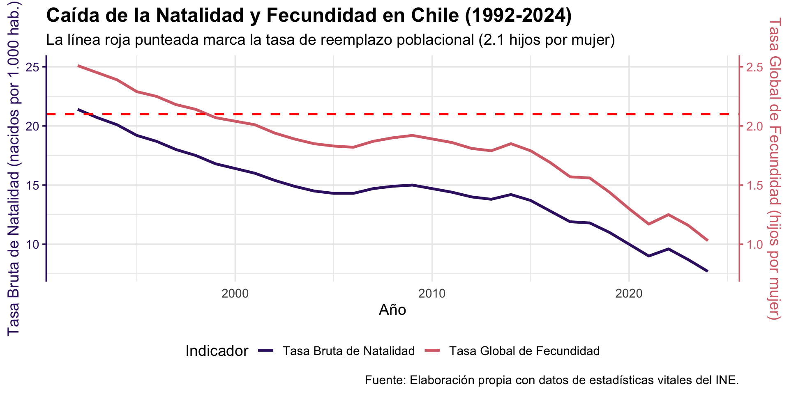
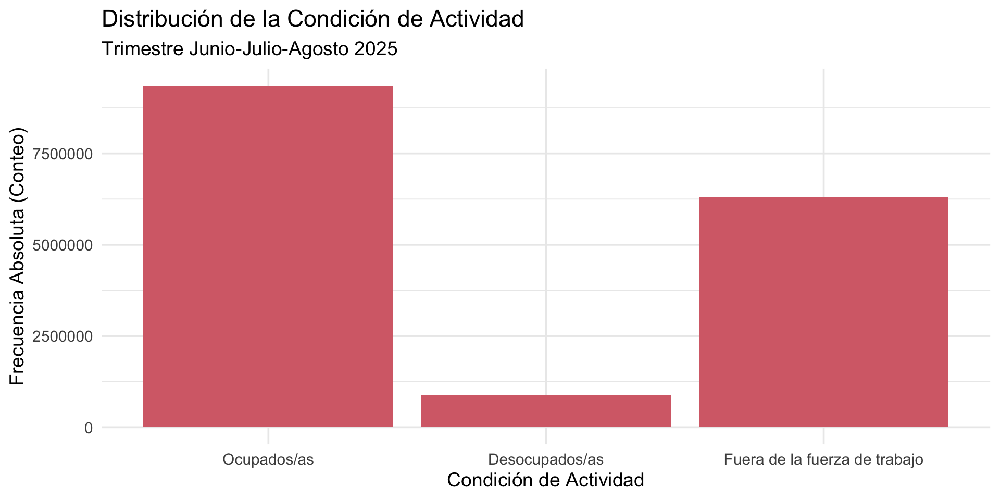
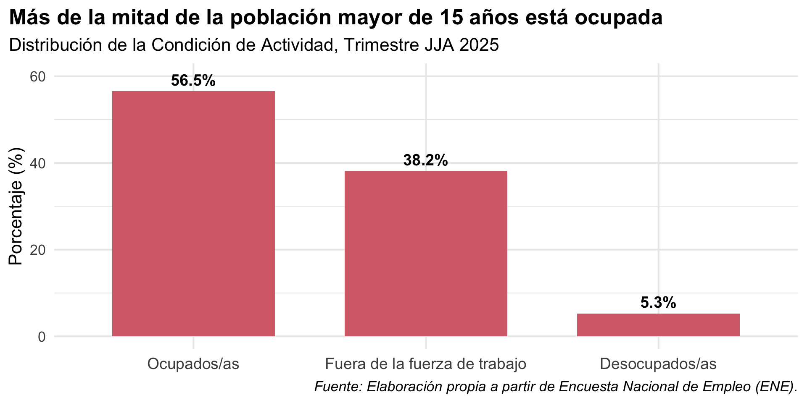
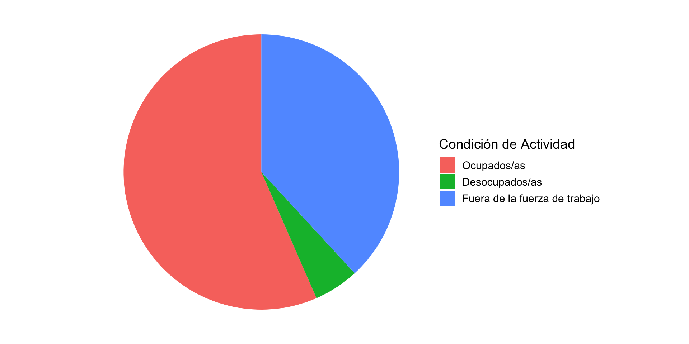

| condicion_actividad | Frecuencia Absoluta (n) | Proporcion | Porcentaje |
|---|---|---|---|
| Ocupados/as | 42467 | 0.431 | 43.1 |
| Desocupados/as | 3918 | 0.040 | 4.0 |
| Fuera de la fuerza de trabajo | 36286 | 0.368 | 36.8 |
| NA | 15929 | 0.162 | 16.2 |
Descripción de Variables Categóricas
Unidad 4: Estadística Descriptiva Univariada
Gabriel Sotomayor
2025-10-13
Objetivos de la Sesión de Hoy
- Revisar la distinción entre variables categóricas y cuantitativas.
- Calcular e interpretar tablas de frecuencias absolutas, relativas y porcentajes.
- Identificar la moda como la medida de tendencia central apropiada para datos categóricos.
- Comprender el concepto y la utilidad de las tasas en el análisis sociológico.
- Crear e interpretar gráficos de barras, discutiendo buenas prácticas de visualización.
1. El Primer Paso del Análisis: Describir
Repaso y Conexión
En la Unidad 3, aprendimos a preparar y manipular nuestras bases de datos en R. Ahora que tenemos los datos limpios y ordenados, comenzamos a analizarlos.
El primer paso de cualquier análisis de datos es la estadística descriptiva univariada: las herramientas que nos permitiran resumir y describir cada variable por sí sola.
La Distinción Fundamental
Las herramientas que usamos para describir una variable dependen fundamentalmente de su tipo. Recordemos la distinción clave:
Variables Categóricas
- Definición: Indican a qué grupo o categoría pertenece una observación.
- Niveles de Medición: Nominal, Ordinal.
- Ejemplos:
sexo,region,nivel_educacional.
- Análisis: Se basa en conteos de casos por categoría.
Variables Cuantitativas (o Numéricas)
- Definición: Toman valores numéricos sobre los cuales las operaciones aritméticas tienen sentido.
- Niveles de Medición: Intervalo, Razón.
- Ejemplos:
edad,ingreso,años_escolaridad.
- Análisis: Se basa en la descripción de la distribución de los valores.
Hoy, nos enfocaremos exclusivamente en las variables categóricas.
2. Resúmenes Numéricos para Variables Categóricas
Tablas de Frecuencia: La Herramienta Central
La forma más básica y fundamental de describir una variable categórica es a través de una tabla de frecuencias. Esta tabla nos muestra la distribución de la variable: qué valores toma y con qué frecuencia.
- Frecuencia Absoluta (
n): Es el conteo simple del número de casos u observaciones en cada categoría.
Ejemplo: Distribución de la variable sexo en una muestra de 10 personas.
| Categoría (Sexo) | Frecuencia Absoluta (n) |
|---|---|
| Hombre | 4 |
| Mujer | 6 |
| Total | 10 |
Nos dice cuántos hay en cada grupo, pero es difícil de comparar si los totales son diferentes.
De Conteos a Comparaciones: Frecuencias Relativas
Para comparar la distribución de una variable entre grupos de diferentes tamaños, necesitamos estandarizar los conteos. Para esto usamos las frecuencias relativas.
- Proporción: Es la frecuencia de una categoría dividida por el número total de casos. El valor va de 0 a 1.
- Fórmula:
Proporción = n_categoria / n_total
- Fórmula:
- Porcentaje: Es la proporción multiplicada por 100. Es más fácil de interpretar y comunicar.
- Fórmula:
Porcentaje = (n_categoria / n_total) * 100
- Fórmula:
| Categoría (Sexo) | Frecuencia (n) | Proporción | Porcentaje (%) |
|---|---|---|---|
| Hombre | 4 | 0.4 | 40% |
| Mujer | 6 | 0.6 | 60% |
| Total | 10 | 1.0 | 100% |
Ahora podemos decir que “el 60% de la muestra son mujeres”, una afirmación comparable con otras encuestas.
La Moda: El Centro de las Categorías
Para las variables categóricas, la única medida de tendencia central que podemos calcular es la moda.
- Definición: La moda es la categoría que tiene la mayor frecuencia en una distribución.
- Es la categoría “más típica” o “más común”.
Ejemplo: Afiliación religiosa en una muestra.
| Religión | Frecuencia |
|---|---|
| Católica | 450 |
| Evangélica | 300 |
| Ninguna | 250 |
La moda es “Católica”, ya que es la categoría con el mayor número de casos (450).
Importante: La moda es la categoría (“Católica”), no el número de casos (450).
Ejemplo Aplicado: La Fuerza de Trabajo en Chile
Para aplicar estos conceptos, usaremos datos reales de la Encuesta Nacional de Empleo (ENE) del INE. Esta encuesta mide periódicamente el estado del mercado laboral en Chile y es fundamental para el diagnóstico y la creación de políticas públicas.
Nos centraremos en la variable condición de actividad (activ) para la población de 15 años y más. Esta variable categórica clasifica a las personas en tres grupos mutuamente excluyentes, que definen su relación con el trabajo remunerado:
- Ocupados: Personas que trabajaron al menos una hora de forma remunerada durante la semana de referencia, o que, teniendo un empleo, no trabajaron temporalmente por razones específicas (vacaciones, enfermedad, etc.).
- Desocupados: Personas que no estaban ocupadas, pero que estaban disponibles para trabajar y habían realizado una búsqueda activa de empleo recientemente (cesantes y quienes buscan trabajo por primera vez).
- Inactivos o Fuera de la Fuerza de Trabajo: Personas que no estaban ocupadas ni buscaron activamente trabajo (ej. estudiantes, jubilados, personas dedicadas al trabajo doméstico no remunerado).
Tabla de Frecuencias: Condición de Actividad
El primer paso es construir una tabla de frecuencias para describir la distribución de esta variable. Usaremos los datos de la ENE para el trimestre móvil Junio-Julio-Agosto de 5.
- Podemos observar que la categoría con la mayor frecuencia, es decir, la moda, es “Ocupado”.
- El 53.1% de las personas encuestadas de 15 años y más se encontraba ocupada en este período, mientras que un 5% estaba desocupada y un 41.9% se encontraba fuera de la fuerza de trabajo.
De la Muestra a la Población: Un Problema de Representatividad
Hasta ahora, hemos contado los casos directamente de nuestra muestra (n). Sin embargo, si quisiéramos que nuestras conclusiones fueran representativas de todo Chile, usar las frecuencias absolutas o relativas directas sería un error.
El Problema: En una encuesta real y compleja como la ENE, no todas las personas tienen la misma probabilidad de ser seleccionadas y, además, no todas las personas seleccionadas aceptan responder.
Esto genera dos desafíos:
- Diseño Muestral Complejo: Personas en regiones rurales o menos pobladas pueden tener, por diseño, una mayor probabilidad de ser seleccionadas que alguien en Santiago.
- No Respuesta Diferencial: Ciertos grupos (ej. jóvenes, hombres, personas de mayores ingresos) tienden a responder menos a las encuestas.
Si no corregimos esto, nuestra muestra no reflejará correctamente la estructura demográfica de Chile y nuestras estimaciones serán sesgadas.
La Solución: Ponderadores o Factores de Expansión
Para resolver este problema, los equipos estadísticos calculan una variable especial llamada ponderador o factor de expansión.
- ¿Qué es? Es un peso numérico que se le asigna a cada persona en la encuesta. Este peso indica a cuántas personas de la población total representa esa única persona entrevistada.
- ¿Cómo se calcula? Es un proceso complejo que busca corregir varios problemas a la vez. El peso final de una persona se ajusta por:
- Su probabilidad de selección original (diseño muestral).
- La no respuesta de su grupo demográfico.
- Otros ajustes (como cobertura del marco muestral y post-estratificación) para “calibrar” la muestra final con las proyecciones de población oficiales del INE (ej. por región, sexo y tramo de edad).
Ponderadores en la Práctica
Al usar el ponderador, pasamos de describir la muestra a estimar las características de la población.
- ¿Cómo se usa? Al calcular cualquier estadística, en lugar de contar cada persona como “1”, la contamos según el valor de su ponderador.
- En R: En las bases de datos, esta variable suele llamarse
fact_cal(en la ENE),fexp,pondoweights. - Aplicación: Para calcular el conteo poblacional en nuestra tabla de frecuencias, usamos el argumento
wtdentro de la funcióncount().
# A tibble: 3 × 3
condicion_actividad Poblacion_Estimada Porcentaje
<fct> <dbl> <dbl>
1 Ocupados/as 9355097. 56.5
2 Desocupados/as 875888. 5.29
3 Fuera de la fuerza de trabajo 6312197. 38.2 Nota sobre análisis avanzado: El análisis correcto de encuestas complejas (para calcular errores estándar, intervalos de confianza, etc.) requiere paquetes especializados como survey. Este es un tema avanzado, pero por ahora, es fundamental que sepan que para obtener estimaciones poblacionales, siempre deben usar el ponderador.
Tabla Ponderada: Condición de Actividad en la Población
Al aplicar el factor de expansión, nuestra tabla ya no describe la muestra, sino que estima la distribución para toda la población de 15 años y más en Chile. Estos porcentajes son los que coinciden con las cifras oficiales publicadas por el INE.
| Condición de Actividad | Población Estimada (n) | Porcentaje (%) |
|---|---|---|
| Ocupados/as | 9355097 | 56.5 |
| Desocupados/as | 875888 | 5.3 |
| Fuera de la fuerza de trabajo | 6312197 | 38.2 |
Interpretación: Ahora podemos afirmar con propiedad que, para el trimestre Junio-Julio-Agosto de 2025, se estima que un 58.6% de la población de 15 años y más se encontraba ocupada, un 5.3% desocupada, y un 36.1% fuera de la fuerza de trabajo.
Tasas: Una Medida Estandarizada para la Comparación
Una tasa es un tipo especial de frecuencia relativa que se usa para comparar la ocurrencia de un evento entre poblaciones de diferentes tamaños.
- Definición: Relaciona el número de eventos de interés con el total de la población “en riesgo” de experimentar ese evento, multiplicado por una constante (generalmente 1.000, 10.000 o 100.000).
- Fórmula:
Tasa = (N° de eventos / Población total en riesgo) * k - Uso Común: Tasas de natalidad, mortalidad, desempleo, homicidios, etc.
Tasas: Una Medida Estandarizada para la Comparación
Ejemplo: Tasa de homicidios.
- Comuna A: 10 homicidios en una población de 50.000.
- Comuna B: 20 homicidios en una población de 500.000.
¿Dónde es más “violento”?
- Tasa A:
(10 / 50.000) * 100.000 = 20homicidios por cada 100.000 habitantes.
- Tasa B:
(20 / 500.000) * 100.000 = 4homicidios por cada 100.000 habitantes.
Conclusión: Aunque la Comuna B tuvo más homicidios en términos absolutos, la Comuna A tiene una tasa de homicidios 5 veces mayor. Las tasas nos permiten hacer comparaciones justas.
Tasas en Acción: Analizando la Crisis de Natalidad en Chile
Para ilustrar el poder de las tasas en el análisis sociológico, examinaremos uno de los cambios demográficos más profundos del Chile contemporáneo: la drástica caída de la natalidad. Para ello, usaremos dos indicadores clave.
- Tasa Bruta de Natalidad:
- ¿Qué mide? El número de nacidos vivos por cada 1.000 habitantes en un año determinado.
- Utilidad: Es una medida general de la frecuencia con que ocurren nacimientos en toda la población.
- Tasa Global de Fecundidad (TGF):
- ¿Qué mide? El número promedio de hijos/as que tendría una mujer al final de su vida fértil si mantuviera las tasas de fecundidad actuales.
- Utilidad: Es el indicador más preciso para medir el comportamiento reproductivo. Una TGF de 2,1 es considerada la “tasa de reemplazo” poblacional.
La Caída de la Fecundidad en Chile (1992-2024)
El siguiente gráfico visualiza la evolución de ambos indicadores. La línea roja punteada marca la tasa de reemplazo poblacional de 2,1 hijos por mujer.

Contexto Sociológico: ¿Por qué hay menos nacimientos?
La socióloga Martina Yopo, experta en género y reproducción, ofrece un diagnóstico complejo que va más allá de las decisiones individuales.
“Mucha gente piensa que no hay futuro para hacer familia en Chile” — Martina Yopo
Algunas claves del fenómeno:
- Infertilidades Estructurales: No se trata solo de que las personas “no quieran” tener hijos, sino de la “falta de condiciones sociales para tener y criar hijos”.
- Tensiones Estructurales: Existe un conflicto entre el mundo del trabajo y la vida familiar, que recae desproporcionadamente sobre las mujeres. La maternidad a menudo obstaculiza el desarrollo laboral y personal.
- Futuro Incierto: La crisis climática, la inestabilidad política y la precariedad económica generan una “desesperanza estructural” que desincentiva la formación de familias.
3. Visualización de Variables Categóricas
Gráfico de Barras: La Herramienta Estándar
Las tablas de frecuencia son precisas, pero no siempre son la forma más rápida de comunicar un patrón. Nuestro cerebro procesa la información visual de manera mucho más eficiente.
El gráfico de barras es la forma más clara y efectiva de visualizar la distribución de una variable categórica.
- Cada barra representa una categoría.
- La altura de la barra representa la frecuencia (absoluta o porcentual) de esa categoría.
Gráfico de Barras: Nuestro Primer Vistazo Visual

Este gráfico es un buen primer paso. Nos permite ver de un vistazo que la categoría “Ocupado” es la moda. Sin embargo, el orden de las categorías es alfabético, lo que no es ideal para la comparación, y las frecuencias absolutas son difíciles de interpretar sin el total.
Buenas Prácticas: Hacia un Gráfico Informativo
Para que un gráfico de barras sea una herramienta de análisis poderosa y honesta, debe seguir algunas reglas:
- Usar Porcentajes: Son más fáciles de interpretar y comparar que las frecuencias absolutas.
- Ordenar las Barras: Ordenar las barras de mayor a menor (o viceversa) facilita la comparación visual y destaca la jerarquía.
- Etiquetar Directamente: Añadir los valores (porcentajes) directamente sobre las barras reduce la carga cognitiva del lector.
- Título y Subtítulo Informativos: El título debe comunicar el hallazgo principal, no solo describir el gráfico.
- Eje Y en Cero: Empezar el eje Y en un valor mayor a cero es una práctica engañosa que distorsiona las proporciones.
Aplicando Buenas Prácticas al Gráfico de la ENE
Ahora, apliquemos todas estas reglas para crear un gráfico final de calidad de publicación.

¿Y por qué no un Gráfico de Torta?
Aunque son muy populares, los gráficos de torta son desaconsejados por la mayoría de los expertos en visualización de datos.

¿Y por qué no un Gráfico de Torta?
El Problema: Nuestro cerebro es muy malo para comparar ángulos y áreas, pero es muy bueno para comparar longitudes en una escala común (como las alturas de las barras).
Pregunta: En el gráfico de torta, ¿es fácil ver qué tan grande es la categoría “Desocupado” en comparación con “Fuera de la fuerza de trabajo”? En el gráfico de barras, la comparación es instantánea.
Regla General: Usa un gráfico de barras para comparar categorías. Reserva los gráficos de torta solo si tienes 2 o 3 categorías y quieres enfatizar la composición de un todo.
Cierre y Próximos Pasos
Resumen de la sesión de hoy:
- Hemos aprendido que la descripción de variables categóricas se basa en el conteo.
- Las tablas de frecuencia (absolutas y relativas) y la moda son nuestras herramientas numéricas fundamentales.
- Las tasas nos permiten hacer comparaciones justas entre grupos de diferentes tamaños.
- El gráfico de barras es la herramienta visual estándar y más efectiva para este tipo de variables.
En el práctico de hoy:
- Aplicarán estas técnicas en R. Usarán
dplyr::count()para crear tablas de frecuencia yggplot2::geom_bar()para crear sus primeros gráficos de barras, poniendo en práctica las buenas prácticas de visualización.
Adelanto de la próxima clase:
- Nos adentraremos en el mundo de las variables cuantitativas, aprendiendo a describir su forma, centro y dispersión con herramientas como el histograma y el boxplot.